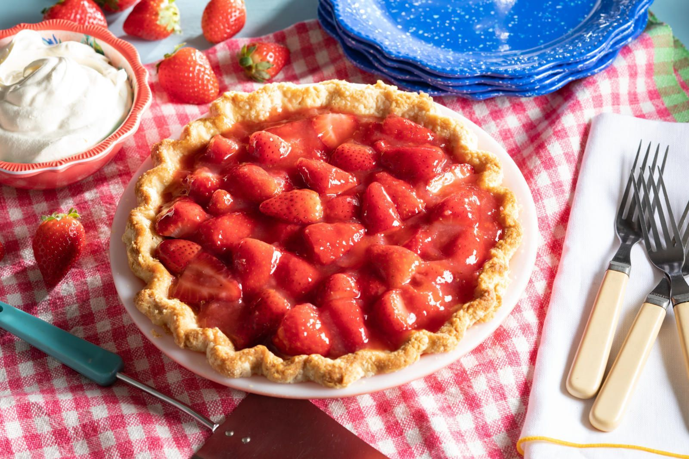

Strawberry Pie

Description
The easiest, quickest and lets not forget DELICIOUSStrawberry pie recipe around.
Using caned strawberry, it will only take 20 minutes to prepare before you are wnjoying this fruity delight.
Ingredients
- 1 (9 inch) pie crust, baked
- 1 (10 ounce) package frozen strawberries
- 1 (8 ounce) jar ready-to-use strawberry glaze
- 1 (8 ounce) container frozen whipped topping, thawed
SERVINGS - 8 SLICES
Steps
- Mix together strawberries and glaze in a medium bowl. Pour strawberry mixture into pie shell.
- Top with whipped topping.